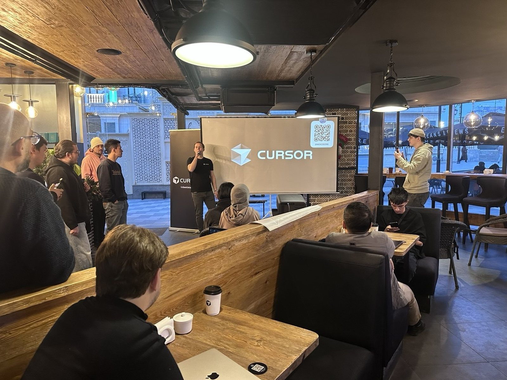
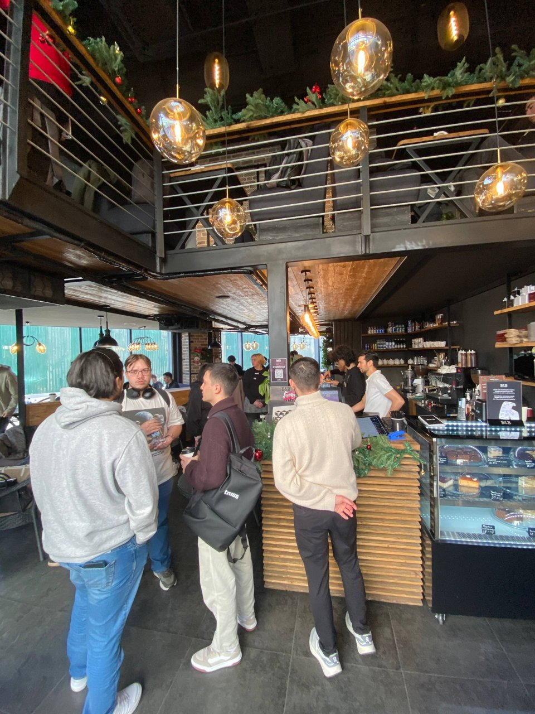
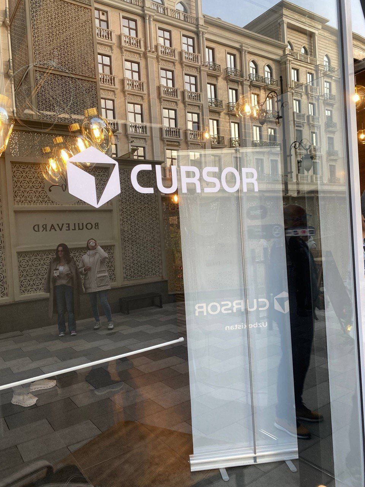

Pitching Sivi in a coffee shop

On 10 January the Cursor community in Uzbekistan had a meetup at B&B Coffee House in Tashkent. I went to pitch Sivi and to see what everyone else was building.

My talk
I got a few minutes on the mic. I started with the problem, since everyone in the room had either looked for a job here or hired someone: vacancies are spread over sites and Telegram channels, and keyword search misses most of them. Then I showed the bot. It reads your resume, or builds one from a few questions, and matches it to openings by meaning.
The questions afterwards were the best part. Someone asked how it deals with vacancies posted in Russian and Uzbek in the same channel. Someone else asked how I know a match is good. I don't have a great answer to that yet, and I said so. A few people offered to test it right there, and I'd take that over a polished answer any day.
The other startups
After me came the other teams, each with a few minutes and a live demo. The ones I remember:
- a dispatch tool for small trucking companies that turns messy chat orders into routes;
- an AI tutor for school maths that explains in Uzbek instead of translating from English;
- a bookkeeping assistant for small shops that reads photos of paper receipts;
- an appointment bot for private clinics that cut missed visits;
- a tool that turns a salesperson's voice notes into CRM entries.
What stood out is how ordinary the problems were. Nobody pitched a moonshot. Every team had picked one boring, annoying problem in a local business and used Cursor to get a first version out in a few weeks.

What I took home
Mostly a to-do list. The people who tried Sivi that night found things in the matching that I wouldn't have found myself, and I wrote them all down. I also came away with a few new people to ask when I'm stuck.
Thanks to the Cursor community for the evening, and to B&B Coffee House for the room. If you want to try Sivi, it's at t.me/SiviAIBot.